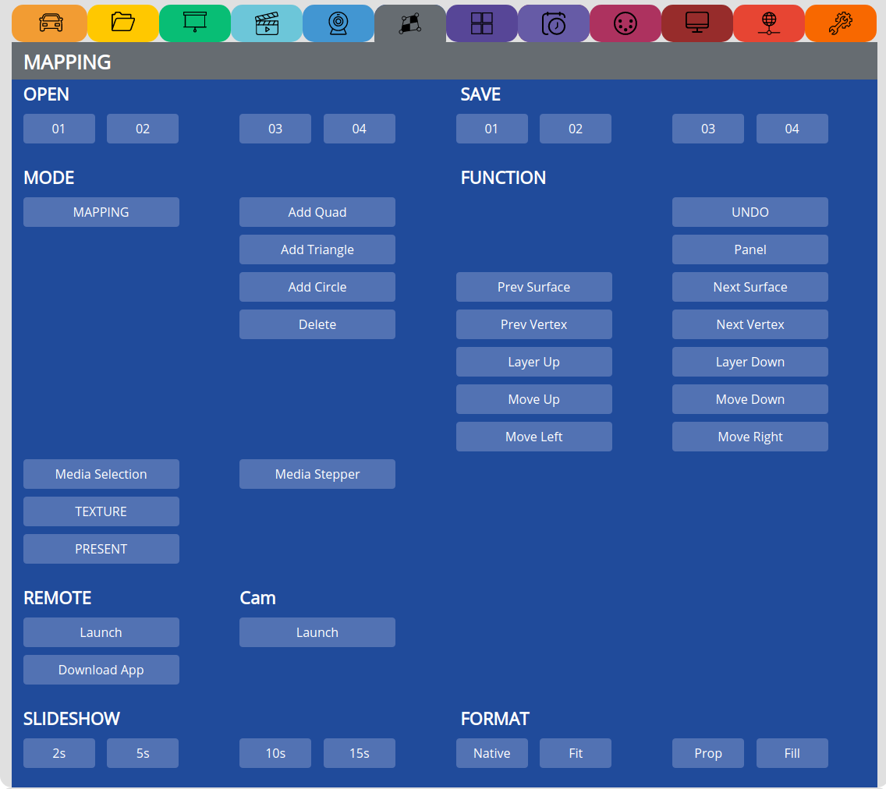

MAPPING¶
Note
Make sure there is a cabled USB mouse connected to the PocketVJ before booting!
If you use an IR mouse, you need to use an IR Keyboard to control the mapper, (CP will not work).
If you use an IR mouse, you need to use an IR Keyboard to control the mapper, CP will not work.
Keyboard keys: 1,2,3,4,a,v,b,m,n,l,k,5,7,8,9,0
Use a Video resolution of 1280 x 720 and a video containing an audiotrack (even silent).
If the mapped video stutters, decrease the bitrate and resolution or wait until it played a few times.
Update: with CP 3.0.3 or newer mapping will also work without USB mouse.
see tutorial: https://video.pocketvj.com/AVideo/video/28/pocketvj-mapping-tutorial
and: https://video.pocketvj.com/AVideo/video/29/pocketvj-mapping-2
OPEN¶
01 - 04 => Opens a stored mapping preset
SAVE¶
01 - 04 => Saves a mapping preset
FUNCTION¶
Select one of the available functions in Mapping mode
REMOTE¶
Launch => Launches the mapper which is compatible with the seperate remote app
SLIDESHOW¶
2s - 15s => Set the slideshow time
Note
Images may be maximal 1920x1080 pixel, also make a dpi of 72
FORMAT¶
Native => Set the aspect ratio of the images